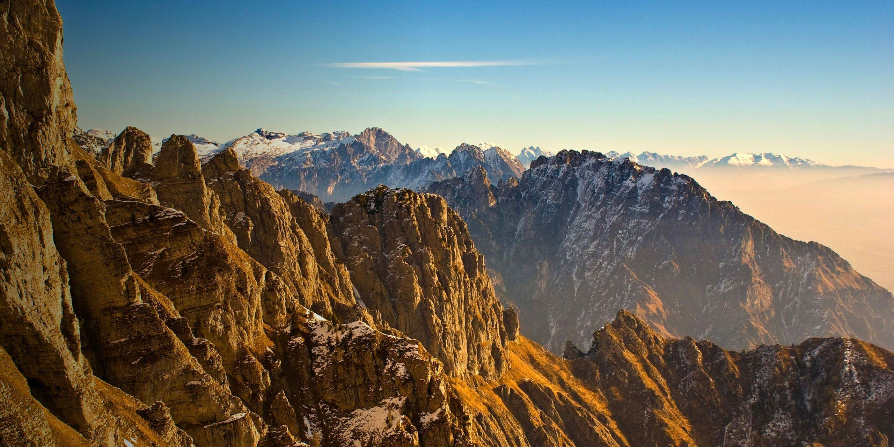
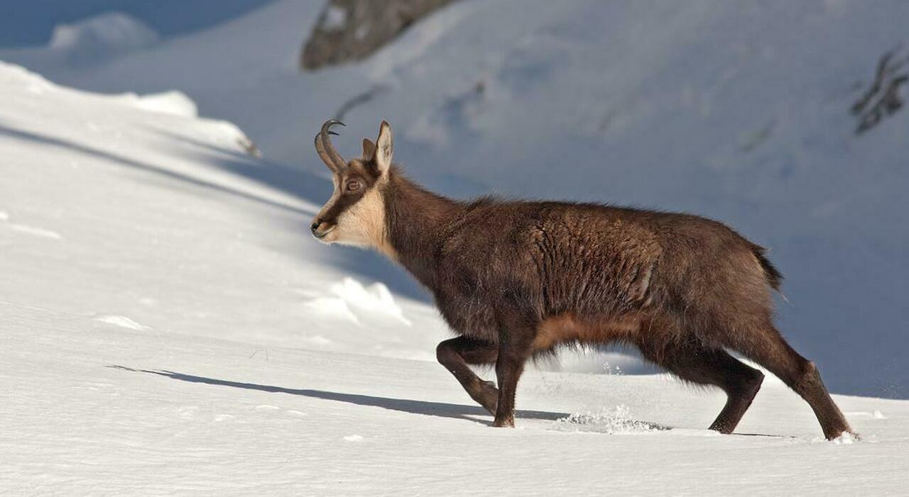
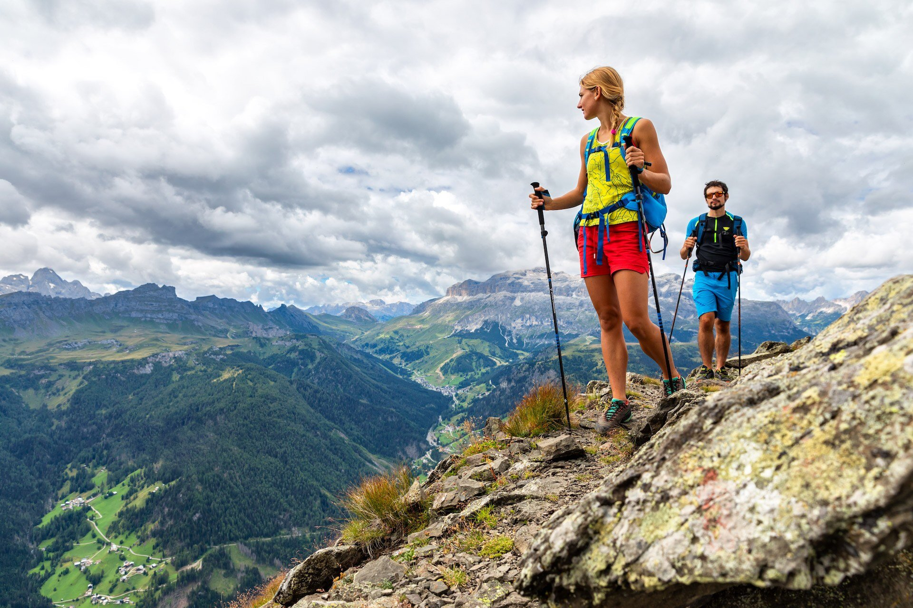

Patrimonio UNESCO con cime imponenti, fiori rari come la stella alpina e paesaggi rocciosi unici.
Il Parco Nazionale delle Dolomiti Bellunesi, istituito nel 1993, si estende per oltre 31.000 ettari nella regione del Veneto, abbracciando alcune delle aree più spettacolari delle Dolomiti, riconosciute come Patrimonio dell’Umanità UNESCO. Questo parco, situato interamente nella provincia di Belluno, è famoso per le sue imponenti formazioni rocciose, le valli incontaminate e una straordinaria biodiversità che lo rendono un gioiello naturalistico di fama mondiale.
Le Dolomiti Bellunesi sono celebri per la loro bellezza unica e per la varietà dei paesaggi. Il parco comprende una serie di massicci montuosi tra cui la Schiara, il Pizzocco e le Vette Feltrine, che raggiungono altezze superiori ai 2.500 metri. Tra le attrazioni più spettacolari si trovano i Monti del Sole, un'area remota e selvaggia, e le Gole del Mis, una serie di canyon spettacolari che offrono scenari suggestivi di rocce e cascate.
Il Parco Nazionale delle Dolomiti Bellunesi è un rifugio per numerose specie animali, molte delle quali rare o protette. Tra i mammiferi, il camoscio alpino è una presenza caratteristica delle aree più alte, mentre il cervo e il capriolo popolano le zone boschive. La presenza del gallo cedrone e del picchio nero testimonia la qualità dell’ecosistema forestale del parco.
Il parco offre una vasta gamma di attività all’aria aperta, ideali per chi ama immergersi nella natura incontaminata. Con oltre 200 chilometri di sentieri, gli escursionisti possono scegliere tra percorsi di diverse difficoltà. Tra i più suggestivi c’è il Sentiero delle Farangole, che attraversa paesaggi alpini mozzafiato, e il Sentiero Dino Buzzati, un itinerario dedicato al celebre scrittore bellunese.
